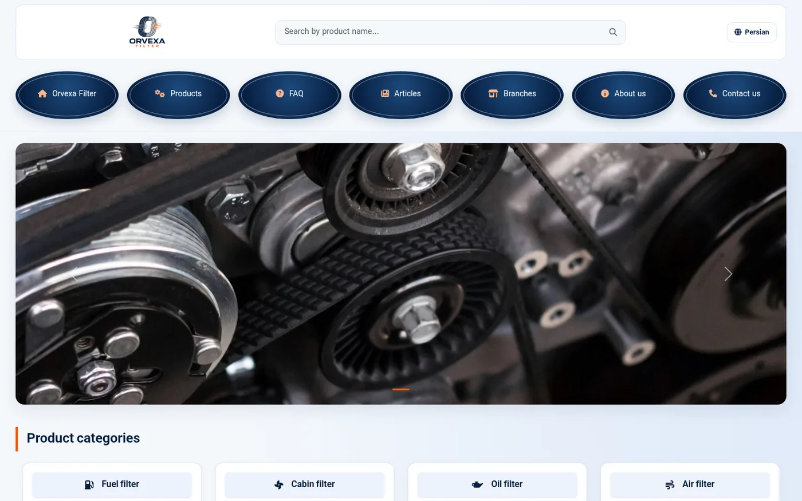
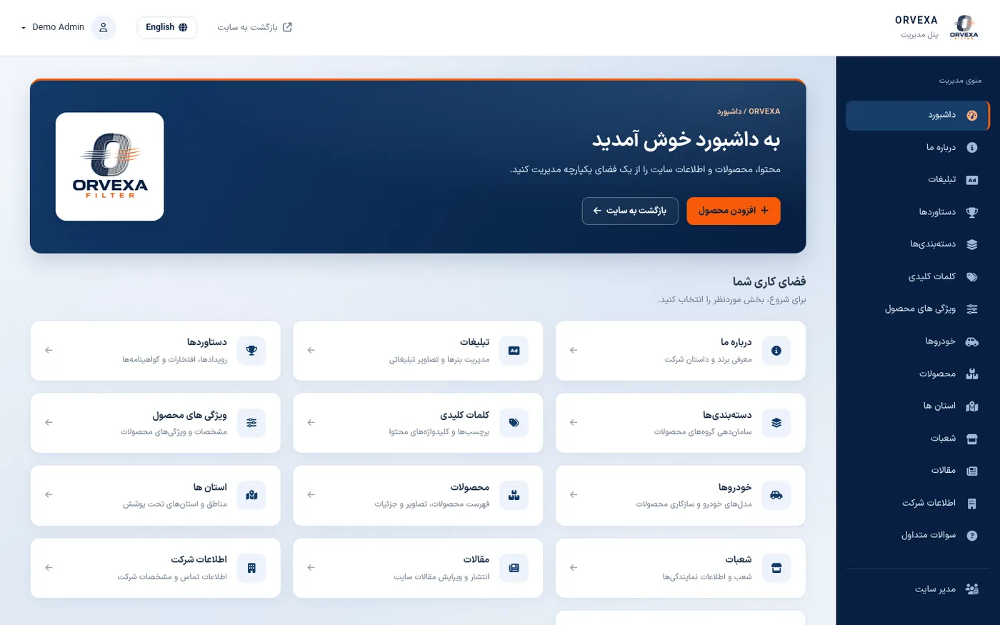

پروژه شاخص · کار اخیرFeatured · Recent work
Orvexa Filter
سایت کاتالوگ دوزبانه فیلترهای خودرو، با ویترین عمومی و پنل مدیریت کامل؛ فارسی راستبهچپ و انگلیسی چپبهراست.
A bilingual catalog site for car filters, with a public storefront and a full admin panel: Persian right-to-left and English left-to-right.
- طراحی چندلایه با الهام از الگوی Onion و اصول Clean ArchitectureMulti-layer design inspired by the Onion pattern and Clean Architecture principles
- بخشهای Visitor و Admin بهصورت مستقل توسعه داده شدهاندThe Visitor and Admin parts were developed independently
- همه محتوا، از محصولات و مقالات تا شعب و پرسشهای متداول، از پنل ادمین مدیریت میشودAll content, from products and articles to branches and FAQs, is managed from the admin panel
- رابط کاربری سایت و پنل، کاملاً ریسپانسیوFully responsive storefront and admin panel
اُروکسا یک برند خیالی است؛ این نسخه نمونهکار بر پایه یک پروژه واقعی و با دادههای نمونه ساخته شده است. لینک نسخه زنده بعد از انتشار اضافه میشود.Orvexa is a fictional brand. This portfolio version is based on a real project and uses sample data. A live demo link will be added once it is deployed.

